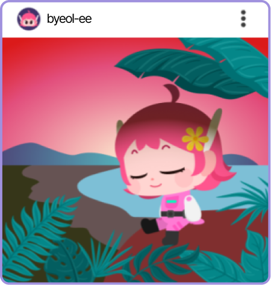
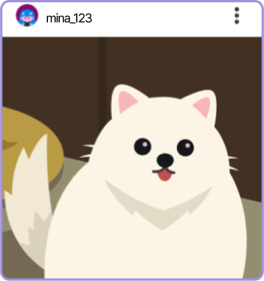
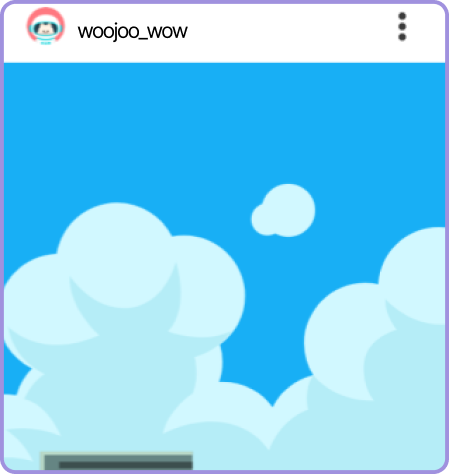

활동
아름다운 댓글, 선플달기 운동 참여해 보기
디지털 공간에서 아름다운 댓글, 선플 달기 운동에 참여해 봅시다.

글상자를 이용해서 내용을 적어 보세요.

글상자를 이용해서 내용을 적어 보세요.

글상자를 이용해서 내용을 적어 보세요.
활동 방법
❶
온라인상 상황을 확인합니다.
❷
화면 아래에
선플
을 직접 적어 봅니다.
❸
실제 디지털 공간에서 선플을 달아 봅니다.
선플
이란 善(착할 선)과 reply가 합쳐진 ‘선의의 리플’의 줄임말로, 악플의 반대말입니다.
착한 댓글, 선한 댓글을 뜻합니다.
활동 예시
“너의 그림 정말 멋져! 네가 그려낸 색감이 아름다워.”
“당신은 누군가에게 큰 영감을 주는 사람이에요! 오늘도 화이팅!”
“이 사진에서 행복이 느껴져. 너와 함께라면 언제나 좋은 일만 있을 거 같아!”